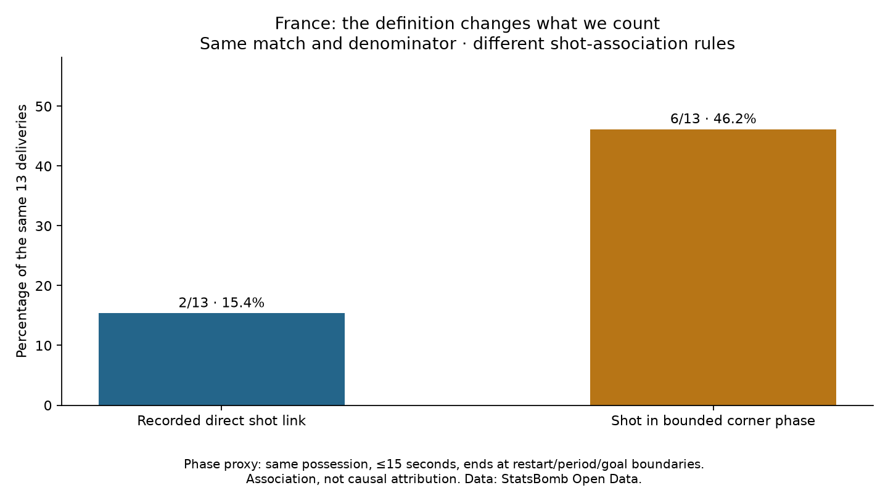

Football analyst training · Project lesson 36
Measure the phase, not only the last pass.
A corner can lead to a shot after another action. We now capture a bounded follow-up phase.
The rule
Start at the delivery. Allow up to 15 seconds in the same possession, stopping at a new restart, period change, possession change or goal. Keep the existing shot definitions. The rule was written before this calculation; the match itself was already inspected.
The completed assignment
- Direct shot links: 2 of 13 corners, 15.4%.
- Bounded phases with a shot: 6 of 13 corners, 46.2%.
- Those six phases contain seven shots, including two goals.

Six corners and seven shots are both correct: one corner phase contains two shots. Use six, not seven, when calculating the proportion of corners followed by a shot.
Coach brief
“Six of France's 13 corners were followed by a shot within our bounded phase rule, compared with two direct shot links. This includes follow-up attempts, but does not establish causal corner value or repeatable effectiveness.”
A longer window or different possession rule could change the result. We did not try different windows to pick the most flattering number.
Run 36_corner_phase_analysis.py in Spyder. phase_after() walks forward through events and stops at the defined boundaries. A shot cannot be counted under two corners.
This worked assignment is completed with assistance. Ask your teacher for a deeper explanation of the boundary logic if needed.
Previous lesson · Full worked assignment and protocol · Reference